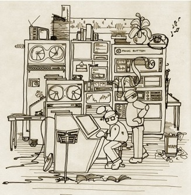

Brave New World? Service Mode...

To observe with a telescope is not exactly what it has been. Not so long ago, the astronomer worked next to the telescope, pushed the buttons, watched the sky through the dome slit and entertained the night assistant with his personal repertoire of songs, frequently ranging from the tragedy of Tosca to the invocative expressions of "Let it be, let it be" or even later masterpieces.
Nowadays, however, in the Age of Automation, the "observer" sits in a brightly lit room, somewhere in the telescope building (he is not quite sure where), and punches the keys of a computer console. He does not know where the telescope is (it may be in space) nor has he any idea of how it looks like. He only worries about the 1/2 night that has been allocated by the Observing Programmes Committee (OPC) for his observations and whether the telescope and the weather will permit him to obtain the data he has been waiting for during the past year with so much expectation.
The present trend is towards even more automation, even better efficiency, etc. What will it be like, 5 years from now? Always ahead of its time, THE MESSENGER has obtained a listing of a future file in the central ESO/La Silla Computer system which is reproduced in facsimile here and illustrated by Karen Saxby. For convenience of the reader, the central computer is indicated by a dash (-) and the observing astronomer with a colon (:).
MESS T=00004 IS ON CR04834 USING 0006 BLKS R=0047 0001**** LOG DUMP FILE: 3.6/133/1984/JEDERMANN 0002**** 0003- GOOD EVENING AND WELCOME TO THE 3.6 M. 0004- IS THIS YOUR FIRST RUN? 0005: NO 0006- WE SHALL CHECK THAT. WHAT IS YOUR NAME? 0007: J. EDERMANN 0008- INSTITUTE? 0009: ASTROPHYSICAL INSTITUTE, ANYTOWN. 0010- OK. YOU WERE HERE ON 123/1983. OK? 0011: WELL, ER... 0012- YOUR RECORD SAYS THAT YOU LOST 23.7 MIN DUE 0013TO WRONG COORDINATES. DID YOU PREPARE 0014YOUR OBSERVATIONS BETTER THIS TIME? 0015: PROMISE 0016- OK. WE SHALL SEE... NOW GIVE YOUR ENTRY 0017- CODE NUMBER. 0018: OPC/X2398.42859YZ 0019- CHECKING. JUST A MOMENT. 0020OK. ACCESS AUTHORIZED BY OPC. PROCEED. 0021PRIME, CASS. OR COUDE FOCUS? 0022: CASS 0023- OK. AVAILABLE INSTRUMENT? 0024: IDS ON B&C SPECTROGRAPH. 0025- ARE YOU SURE YOU WANT THIS INSTRUMENT? 0026: SURE. 0027- ARE YOU REALLY SURE? 0028: YES. DEFINITELY. 0029- SORRY. I WOULD RECOMMEND TO TAKE THE 0030D&E SPECTROGRAPH. 0031: WHY? 0032- NO ANSWER. 0033: BUT WHY. I ASKED FOR THE OTHER!! 0034- OK. TEMPORARY TROUBLES WITH B&C. 0035: THEN CALL THE REPAIR UNIT. 0036- REJECTED. THE CARIOCA GAME IS STILL ON. 0037 : I SEE. BRING IN THE OTHER SPECTROGRAPH. 0038- OK. CASS MIRROR IN. D&E IN. IDS ON. OK. 0039- DONE. OBJECT? 0040: NGC 8055. 0041- COORDINATES 23:55:56 -78:23.5 (1984.4) 0042- SORRY. IMPOSSIBLE OBJECT. REJECTED. 0043: WHY? 0044- ALREADY OBSERVED WITH THIS INSTRUMENT. 0045: WHO DID THAT!!!! 0046- CLASSIFIED INFORMATION. NOT AVAILABLE. 0047: OK. TAKE NGC 8056. 0048- COORDINATES 23:56:55 -89:55:45 (1984.4) 0049- SORRY. OUT OF RANGE (ZENITH DISTANCE 60:21W) 0050: OH, PLEASE!!!! 0051- OK. BUT ONLY THIS ONE! 0052: PROMISE. 0053- GO TO OBJECT. OPEN HATCH. MOVE DOME. ACQUIRE 0054OBJECT. SURROUNDING CONFIGURATION CHECKED 0055OK. CENTER IN SLIT. AUTOGUIDER ON. START 0056INTEGRATION. NOW. TIME 01:23:55.4 ET. 0057- OBSERVATION STARTED. INSERT COMMENTS. 0058: NGC 8056. Z.D. IS COMPUTER RESPONSABILITY. 0059- THAT IS NOT FAIR. YOU ASKED ME. 0060: OK. ASTRONOMER'S RESPONSABILITY. 0061 (PAUSE) 0062- OBSERVATION STOP. 0063: WHAT!! WHY? 0064- ENOUGH PHOTONS RECEIVED. SIGNAL/NOISE = 7.89 0065: BUT I WANT TO BE SURE... PLEASE!! 0066- REQUEST REJECTED. WASTE OF VALUABLE TELESCOPE 0067TIME. NEXT OBJECT? 0068: NGC 8056. 0069- REJECTED. ALREADY OBSERVED WITH THIS 0070CONFIGURATION. 0071: WHO? 0072- SORRY. CLASSIFIED INFORMATION. 0073: OK. I GIVE UP. LET US GO TO THE NEXT OBJECT 0074NGC 8057. 0075- WHAT ABOUT THE NEW SUPERNOVA IN NGC 3333? I 0076THINK THE OPC ALLOWED MINOR DEVIATIONS FROM 0077YOUR ORIGINAL PROGRAMME? 0078: YES. BUT... 0079- I WOULD LIKE TO SEE WHAT IT LOOKS LIKE. 0080IAU CIRCULAR 5123: TRANSFER DATA. 0081MOVE TELESCOPE. MOVE DOME. ACQUIRE. 0082OBSERVATION START. SPECTRAL DISPLAY ON. 0083: I AM GOING TO WRITE TO THE DIRECTOR GENERAL!! 0084(PAUSE) 0085: HEY. THAT IS NOT BAD! LOOK AT THOSE LINES!! 0086- FEXXIV AT V=16789.45643 KM/S 0087: WHAAW!! 0088- YOU SEE THAT I WAS RIGHT? PHOTOMETRY? 0089: SURE! 0090- INTEGRATION STOP. D&E OFF. PHOTOMETER ON. 0091INTEGRATE. STOP. PICTURE? 0092: WELL. ER... 0093- OK. PHOTOMETER OFF. CASS MIRROR OUT. PRIME 0094FOCUS MIRROR IN. TRIPLET ACTIVATE. LOAD 0095CCD. INTEGRATE. TRANSFER ARRAY TO DISC. 0096DISPLAY. 0097: WHERE IS THE SUPERNOVA? THERE ARE SO MANY 0098STARS IN THAT PICTURE... 0099- HERE AT THE ARROW. 0100: OH YEAH I SUPPOSE SO. 0101- WHICH JOURNAL? 0102: WHAT DO YOU MEAN?? 0103- A&A, AP.J., A.J., M.N. OR ESO MESSENGER. 0104: I KNOW THOSE. BUT WHAT DO YOU MEAN? 0105- WHICH ONE DO YOU WANT FOR THE PUBLICATION? 0106: THAT IS NOT YOUR BUSINESS. 0107- SPECTRUM TRANSFORMED TO INTENSITY. WAVELENGTH 0108SCALE CALIBRATED. NO. OF LINES IDENTIFIED: 87 0109EQUIVALENT WIDTHS FOUND. LINE RATIOS COMPUTED. 0110TEMPERATURE. PRESSURE. ABUNDANCIES OK. 0111PHOTOMETRY OK. COLOURS TRANSFORMED TO STANDARD 0112SYSTEM. 3 SATELLITE TRAILS AND 1 COMET CLEANED 0113FROM THE DIRECT PICTURE. ABSTRACT. INTRODUCTION. 0114OBSERVATIONS. DISCUSSION. CONCLUSION OK. ANY 0115SPECIAL WISHES FOR TITLE AND ACKNOWLEDGEMENTS? 0116: HOW DO YOU DARE!! 0117- OK. TITLE: SUPERNOVA IN NGC 3333. 0118ACKNOWLEDGEMENTS: ESO CENTRAL COMPUTER. 0119TRANSMITTED TO: (A&A) COMPUTER. 0120: WHERE IS THE PANIC BUTTON? 0121- I AM NOT GOING TO TELL YOU. 0122NEGATTIVE REPLY FROM (A&A). STYLE TOO DRY. 0123CALL EDIT-PROG. MORE POESY PLEASE. THANKS. 0124TRANSMTTED TO: (MESSENGER) COMPUTER. 0125: WELL. PERHAPS IN THIS CASE... PLEASE SHOW ME 0126THE MANUSCRIPT SO THAT I CA... 0127- SORRY TO CUT IN. BUT PAPER NOW ACCEPTED BY 0128(MESSENGER). CONGRATULATIONS. NEXT OBJECT? 0129: I*************************************** 0130(SUBSEQUENT DIALOGUE DELETED BY INTERNAL 0131 CENSORING PROGRAMME AFTER CROSS-REFERENCE 0132 WITH FILE "BADWORDS") 0133**** 0134**** END OF LOG DUMP FILE 3.6/133/1984/JEDERMANN© The ESO Messenger (Editor: Richard West)